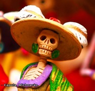

Día de muertos en México
¿Qué se celebra?
El Día de Muertos es una celebración mexicana de origen mesoamericano que honra a los difuntos el 2 de noviembre, comienza desde el 1 de noviembre, y coincide con las celebraciones católicas de Día de los Fieles Difuntos y Todos los Santos.
Es una festividad que se celebra en México y en algunos países de América Central, así como en muchas comunidades de los Estados Unidos, donde existe una gran población mexicana y centroamericana. La Unesco ha declarado la festividad como Patrimonio Cultural Inmaterial de la Humanidad.
Los orígenes de la celebración del Día de Muertos en México son anteriores a la llegada de los españoles. Hay registro de celebraciones en las etnias mexica, maya, purépecha y totonaca. Los rituales que celebran la vida de los ancestros se realizan en estas civilizaciones por lo menos desde hace tres mil años. Entre los pueblos prehispánicos era común la práctica de conservar los cráneos como trofeos y mostrarlos durante los rituales que simbolizaban la muerte y el renacimiento.

